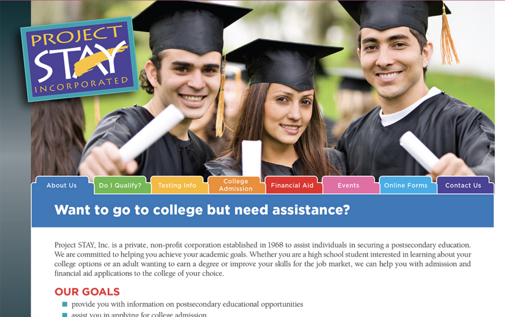

Redesign an intuitive navigation and trustworthy information structure to increase Project Stay’s client retention.
The primary goal was to improve the overall design and content layout that is trustworthy and intuitive so users can easily determine the onboarding process and follow through with services.
Increase Project Stays clientele by redesigning their website so that users can easily learn about Project Stay and begin the sign up process.
I began conducting several usability tests with participants via zoom, I then synthesized the results using a 2x2 prioritization matrix to organize and interpret the data.
My team and I began brainstorming during the initial meetings about our target user and in the end I finalized our persona: Bethany who is a young adult in San Antonio who has either a high-school or GED diploma seeking a college education to advance her career.
Through a brief run through of the Project Stay website I created a visual idea of the projected path Bethany would take to begin the onboarding process.
The next plan of action was to create a new color palettes and typography that would help communicate the brand’s identity of trust and modernity.
One of the biggest challenges we determined after usability testing was users were still struggling with the information quantity. We were also faced with the challenge of content layout and finding the best way to make the navigation flow in a way that made sense to the user.
Below are clickable prototypes of final iteration.
In conclusion, greatest achievements were learning how to put aside my vision to support the groups decision. I was able to find that balance between voicing my opinion and knowing when to listen. While I continued to work with my team, I used my free time to play around with my ideas to offer future iterations once the prioritized problems were solved. This project gave me a great opportunity to work on information architecture, strengthen my adaptability and team work skills.